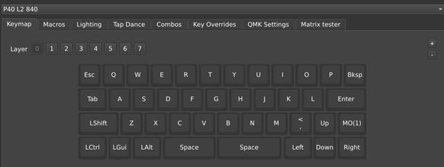
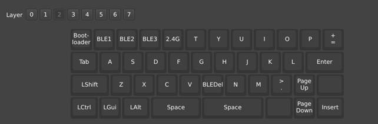
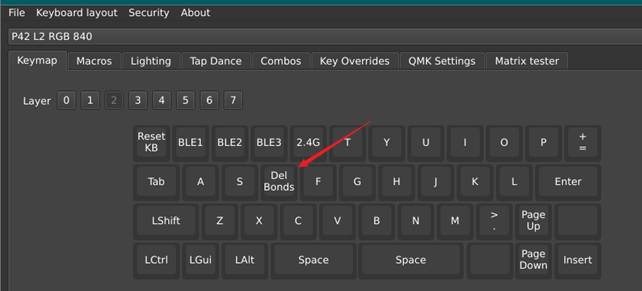

改键请打开在线软件:
https://vial.rocks/
此图为第三层的按键解释
VIAL 和上图对应关系



重点 -> 新PCB到手以后第一件事清除所有已有配对:
FN+left+D --- 上图的Del Bonds 键值
蓝牙相关 FN 默认为 MO(1)
FN + left + Q：蓝牙通道1 (BLE1) -- 当前通道按住3秒以上清除已有配对
FN + left + W：蓝牙通道2 (BLE2) -- 当前通道按住3秒以上清除已有配对
FN + left + E：蓝牙通道3 (BLE3) -- 当前通道按住3秒以上清除已有配对
FN + ESC : 进入刷机模式(短按)
FN + ESC : 恢复出厂模式-长按3秒以上,收到货第一次使用请执行一次
2.4G相关
FN + left + R：2.4G连接 (2.4G)
灯效相关
FN+D: 打开或者关闭灯效
FN+S: 切换灯效